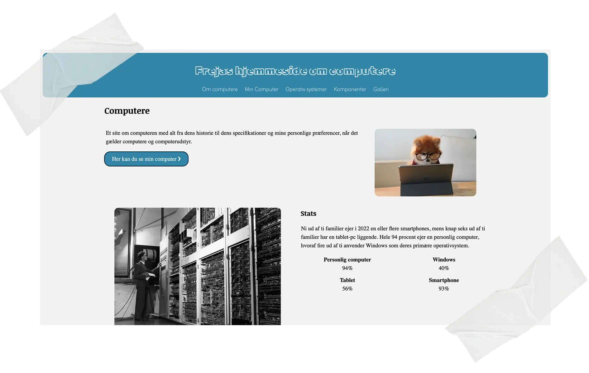

Tema 2 - Grundlæggende Web
Website
Tema Beskrivelse
Dette tema gav mig en grundlæggende forståelse for de vigtigste værktøjer og begreber inden for multimediedesign. Jeg fik mine første erfaringer med HTML, CSS, Figma og digitalt design, som har dannet fundamentet for resten af min uddannelse.
Opgave Beskrivelse
Under dette tema blev vi sat til at lave et Website som både var responsiv som mobil og desktop. Vi fokuserede på at lære det basale inde for HTML og CSS for at lave en hjemmeside der fungere. Vi lærte opsætning med CSS grid og brug af media query.
Proces, løsning og resultat
Igennem processen af denne hjemmeside fokuserede jeg pp at lære det basale til at lave en fungerende hjemmeside. Jeg var blevet givet billeder, samt tekst og en wireframe der skulle følges for at den kunne godkendes. Dette gjorde at jeg lærte at bruge media query for at gøre den responsiv til både mobil og desktop, og lærte at opsætte hjemmesiden med CSS grid.
Jeg lærte det helt basale af hvordan man startede en ny HTML fil, samt hvordan man kunne ændre på farver og design med CSS.
Dette var min studiestartsprøve som jeg bestod hvilket gjorde jeg kunne forsætte videre på studiet.
Besøg siden →